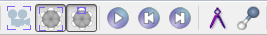

Molekel supports the addition and removal of bonds. To add/remove bonds enable the molecule interaction mode then select atoms to link or bond to remove and click on the Add/remove bonds toolbar button.
A 720p video showing how to remove and add a bond is available here: http://molekel.cscs.ch/video/addremovebond.html
Add bond
1) Click on Interact with molecule toolbar button
2) Click on Pick atom/bond toolbar button
3) Click on first atom
4) Click on second atom while holding down the Shift key; this will enable the Add/remove bond button

5) Release the Shift key
6) Click on Add/remove bond toolbar button
Remove bond
- Click on Interact with molecule toolbar button
- Click on Pick atom/bond toolbar button
- Click on bond to remove
- Click on Add/remove bond toolbar button